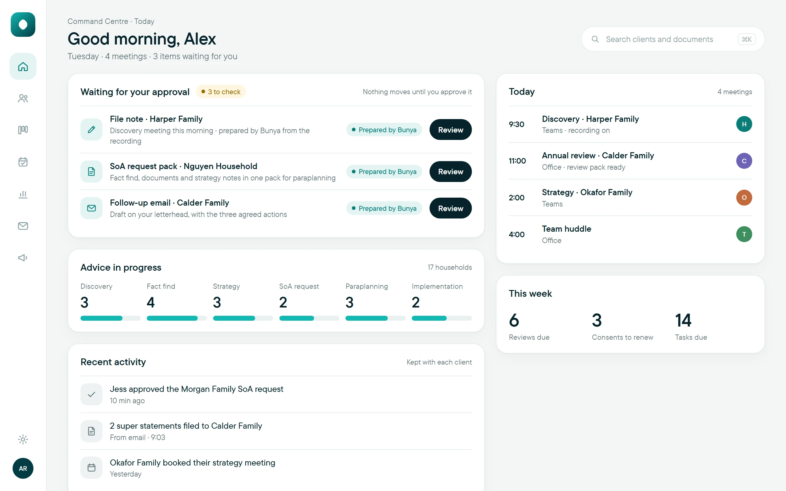
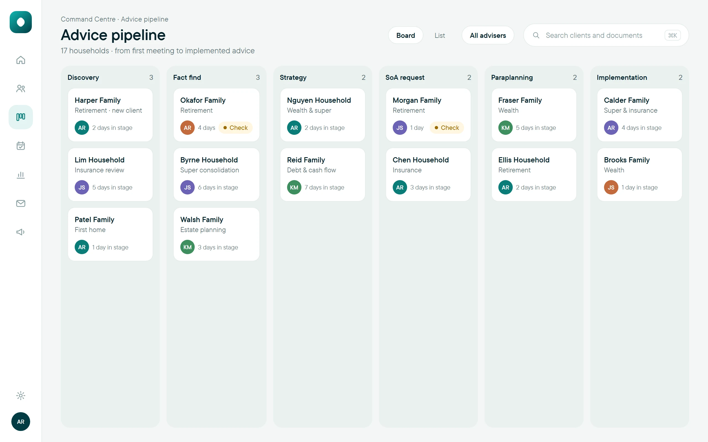
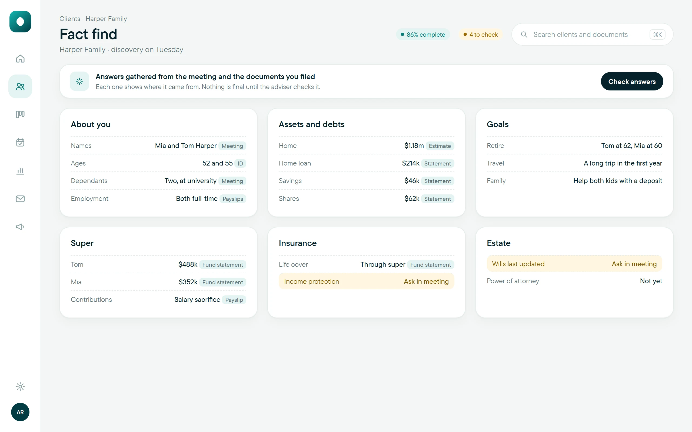
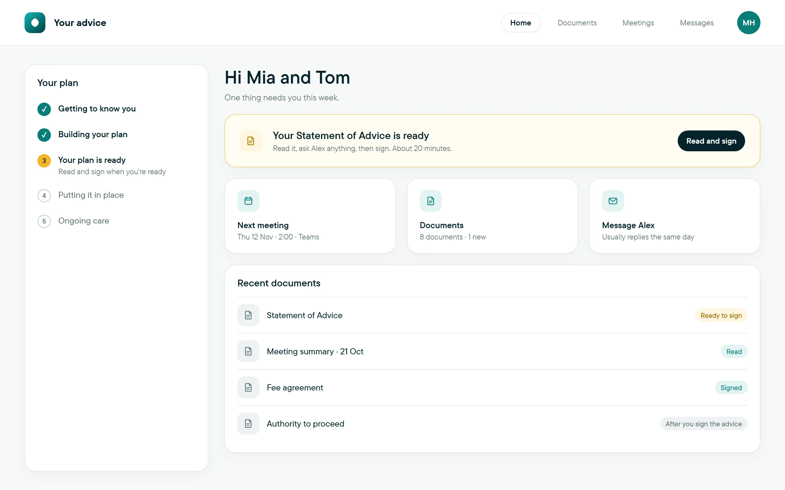
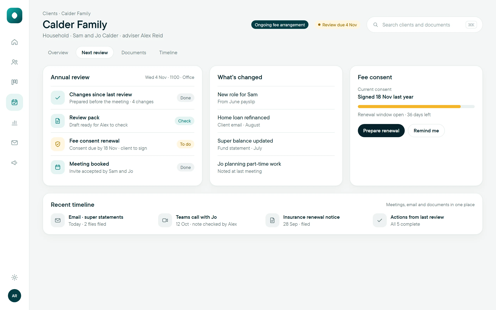

Your environment
Built in your own Microsoft 365.
Client records, documents and approvals stay in your firm’s tenancy, under your administration.
- Outlook
- Teams
- SharePoint
- Dataverse
Bunya Command Centre
From first meeting to implemented advice. AI prepares the work. Your team approves every step.

Bunya Command Centre is the practice operating system for Australian advice firms. One record for every client. One workflow for every piece of advice. Agents that prepare the work, and a person who approves every step.
Your environment
Client records, documents and approvals stay in your firm’s tenancy, under your administration.
Human approval
Agents
31
Apps
5
Built for here
SoA requests, ongoing fee arrangements and annual reviews, the way Australian practices run them.
Sources
File notes link to the moment it was said. Fact finds show the statement each answer came from.
The advice journey
Every new client, start to finish, with an owner at each step and nothing waiting on someone’s memory.

The fact find, documents and strategy notes come together in one request pack, checked by the adviser before paraplanning.

From sign-off to advice in place, every action has an owner and a due date, and the client sees what happens next.

Reviews start from each client’s real dates, with what’s changed prepared before the meeting and consent kept with the review.

Across every stage: compliance and evidence, kept as the work happens. Compliance & evidence
Agents
Each one prepares a single job the same way every time, with every source linked, and waits for a person to approve it.
Apps
“The attraction was a practical approach tailored to financial advice, rather than automation for its own sake.”
Kane Leersen · Organisation Leader & Personal Financial Adviser, Regional Prosperity Financial Advice
Questions
One meeting covers the demo and how your firm works today.